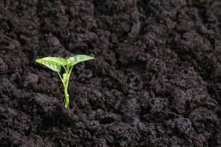

Quick hummus recipe
This recipe makes quick, tasty hummus, with no messing.
It has been adapted from a number of different recipes that I have read over the years.
Hummus is a delicious thick paste used heavily in Greek and Middle Eastern dishes.
It is very tasty with salad, grilled meats and pitta breads.
Chickpeas, hummus's main ingredient, give you protein, good-for-you carbs, and fiber. Like other members of the legume family, they routinely top lists of the world's healthiest foods.
Eating more plant foods is good for you. People who make that a habit are less likely to get certain diseases. Of course, lots of things affect your health -- there's no miracle food -- but a little hummus wouldn't hurt.
Garlic and olive oil are two of the best-known and most studied ingredients. They're both part of the famously good-for-you Mediterranean Diet. These zesty seasonings give hummus its great flavor.
Remove the skin from the garlic, and chop coarsely
Remove all the seeds and stalk from the pepper, and chop coarsely
Add all the ingredients into a food processor
Process all the ingredients into a paste If you want a coarse "chunky" hummus, process it for a short time
If you want a smooth hummus, process it for a longer time
For a different flavor, you could try blending in a small measure of lemon and coriander, chili pepper, lime and chipotle, harissa and mint, or spinach and feta cheese.
Experiment and see what works for you.
Storage
Refrigerate the finished hummus in a sealed container.
You should be able to use it for about a week after you've made it. If it starts to become fizzy, you should definitely discard it.
Hummus is suitable for freezing; you should thaw it and use it within a couple of months
Humus
is the dark organic matter in soil  that is formed by the decomposition of plant and animal matter.
It is the a kind of soil organic matter. It is rich in nutrients and retains moisture in the soil.
Humus is the Latin word for "earth" or "ground".